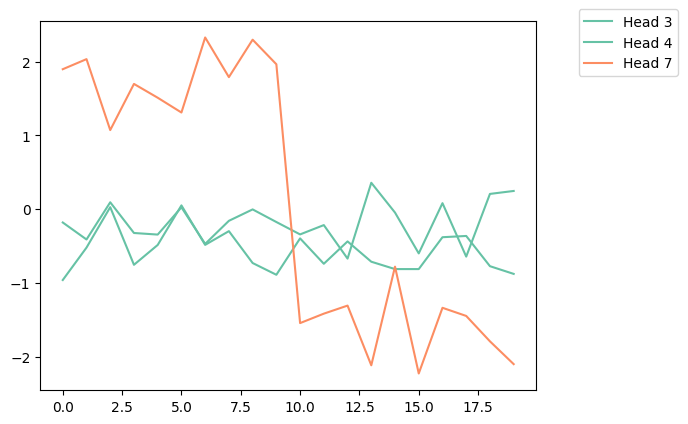
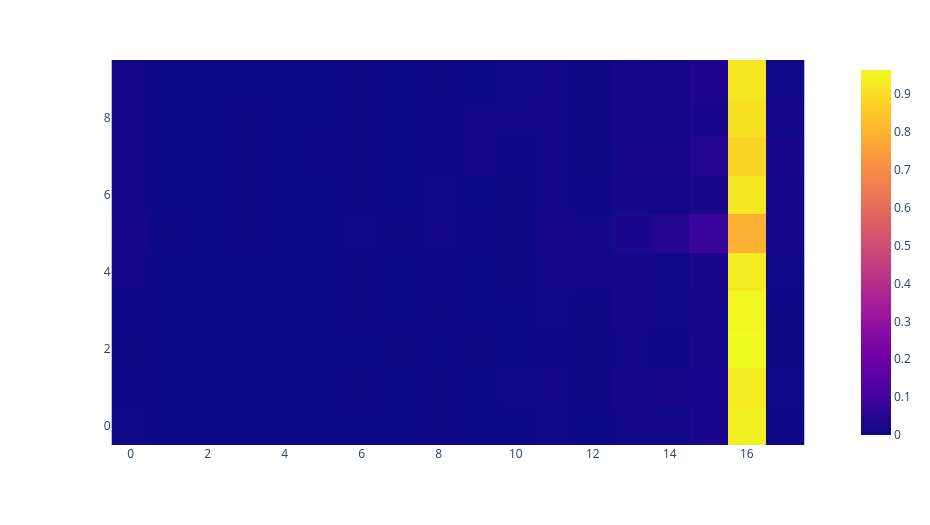
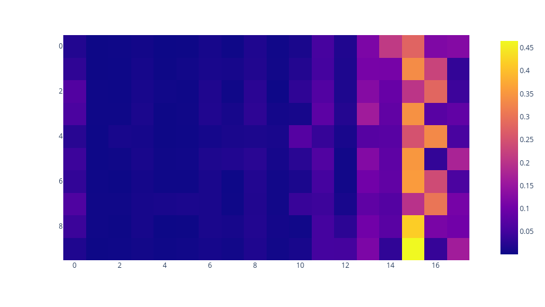

Localising recognition
Introduction
Research making use of SAEs has shown the existence of a "recognition" feature in models, that is a feature which activates when the current token is the last token of a known entity. However, while SAEs are incredibly helpful at finding interesting features, aiding hypothesis generation, they don't tell us how these features are computed mechanistically. Using the existence of the entity recognition feature as inspiration, we try to find a sparse subset of the models components which can distinguish between known and unknown entities. To validate the circuit, we use our sparse circuit to extract a large list of known entities from the model.
Known entity neurons
To find a sparse set of neurons which activate precisely on known entities, we construct a tiny dataset of 5 known entities, and 5 unknown entities, for contrast.
Unknown entities: [" Shark car", " Hot cat", " Arctic vine", " Time swing", " Bottle Loop"]
Known entities: [" George Bush", " hot dog", " Social Security", " real estate", " Air Force"]
Despite using such a small dataset, we don't have to be too careful when identifying candidate neurons, because we can use downstream recovery of novel known entities as validation.
We use 3 entities from each class as a train set, and then leave 2 entities from each class as a holdout set. We focus on GPT2-Small for the circuit. By looking at all the neurons which have an activation of lower than 0.05 on all unknown entities, and greater than 0.0 on all known entities, we find a single neuron in the first layer of GPT2-Small associated with known entities, Neuron 0.2946.
We hypothesize that this neuron has a component in its pre activation which detects whether the current bigram is known or not. To find this component, we look at the contributions of heads whose contribution depends primarily on local tokens. Heads 3, 4, and 7 have local positional kernels, so they attend locally by default. Heads 1 and 5 are duplicate token heads, so their contribution depends only on positional information together with the embedding of the current token. The remaining heads can be ignored for the purposes of finding the recognition component of the pre-activation of neuron 0.2946, because their attention output depends primarily on distant tokens, so wouldn't be helpful at distinguishing local entities. We can consider head 5 and head 1 as part of the skip connection contribution.

Contributions to the Pre-Activation of Neuron 0.2946 from each Head. The first 10 inputs are on known entities, and the next 10 entities are on unknown entities.
Figure 1 shows that Head 7 is the most significant local head for determining the pre activation of Neuron 0.2946. It contributes significantly positively when the entity is known, and significantly negatively otherwise. To investigate this further, we look at the attention patterns of Head 7 on known and unknown entities.
 Attention patterns of Head 7 when the final 2 tokens are a known entity. |
 Attention patterns of Head 7 when the final 2 tokens are an unknown entity. |
|---|---|
In Figure 2, you can see that when on a known bigram, Head 7 attends almost entirely to the previous token. And when on an unknown bigram, the attention pattern is dispersed (still only dispersed over ~5 tokens, because Head 7 has a local positional kernel).
Mechanistic theory
The recognition component of the pre-activation of neuron 2946 can be approximated by \(\text{contribution}_{\text{head}_{7}} + f(x_{-1})\). Where \(f\) combines contributions from Head 5, Head 1, and the skip connection.
We expect \(f(x_{-1})\) to be tracking whether the current token is likely the suffix of a bigram or not.
The contribution of head \(7\) to neuron \(2946\) is a weighted sum of token contributions, where token contributions are weighted by the attention pattern of Head \(7\). Because Head \(7\) contributes significantly to the pre-activation of neuron \(2946\) when on a known bigram, it must be that the token contributions of bigram prefixes are high.
This tells us that we could adversarially attack Head \(7\) by constructing a text consisting solely of bigram prefixes, tricking the model into "recognizing" an entity. In practice, though, texts have filler words such as prepositions or articles, and words which aren't prefixes of bigrams. This means the total contribution of dispersed attention patterns will be dragged down by filler words and non bigram-prefixes, which have negative token contributions.
So, by making sure that the attention pattern of Head \(7\) is dispersed on unknown bigrams, and focused on known bigrams, the model can linearly distinguish the two cases.
In theory, if the residual stream dimension were large enough, it could implement this attention strategy just by adjusting its \(\text{QK}\) circuit so that bigram suffixes attend to matching bigram prefixes, and that they attend roughly uniformly to non-matching prefixes. In practice, it can only approximate this, because \(\text{QK}\) is low rank.
In summary, the algorithm the model runs is:
1.) Check that the current token is a bigram suffix via the skip-connection \(f(x_{-1})\)
2.) Check that the bigram suffix matches with the previous token by distinguishing between dispersed and focused attention patterns
3.) Check that the previous token is actually a bigram prefix using Head 7's token contribution
We expect glitches to occur when the QK matrix accidentally matches a bigram suffix with a bigram prefix, when that bigram is unknown. Because only a small subset of tokens pairs occurs in practice, the model is not incentivized to remove such glitches, and so we expect to find glitch entities when we try to list the known entities.
Filtering for known bigrams
Given the above algorithm, we can devise a filter for bigrams the model knows:
1.) Multiply out (\(W_\text{E}\text{Q}+b_{\text{Q}}+W_{\text{pos}}[n])\text{K}W_\text{E}^T\) (after factoring in layer norm), called the QK matrix, and look for QK pairs, such that when the surrounding text is a fixed generic input sequence, the previous token gets at least \(\theta_{\text{attn}}\) attention from Head 7. We can do this just by operating on the QK matrix without having to explicitly compute attention.
2.) For each high QK bigram pair, approximate the \(\text{head}_7\) contribution by \(g(x_{-2})\), and the skip contribution by \(f(x_{-1})\). Then check for the approximate pre-activation contribution \(f(x_{-1})+g(x_{-2})\) to be above some threshold \(\theta_{\text{neuron}}\).We can calibrate values of \(\theta_{\text{attn}}\) and \(\theta_{\text{neuron}}\) by looking at the appropriate values on a small set of known bigrams.
This filtering process can be performed in less than a second with a T4 GPU, because each of the filters can be performed in parallel using pytorch operations.
In terms of time complexity, it's not actually faster than brute force running \(d_{\text{vocab}}^2\) token pairs through the model, and using a linear probe. This is because we multiply out the full QK matrix to find the large entries (though potentially there are ways to avoid this). But by localising the circuit, we can reduce the constant factor in the computation significantly. In any case, the primary purpose of this filter is to validate the above circuit, by using it to find novel known bigrams, rather than beating baselines.
Bigrams found
This is a small list with \(\theta_{\text{attn}}\) and \(\theta_{\text{neuron}}\) chosen to find a relatively small list of bigrams for demonstration purposes.
[ ' Life insurance', ' Joy Story', ' hon Members', ' Electric grid', ' marine clos', ' Rap sheet', ' Ver Core', ' Norman Sin', ' lip bal', ' Murray Hour', ' stock market', ' Black History', ' Game jam', ' Nic Fe', ' Blue collar', ' United Airlines', ' fighting game', ' Bud Ban', ' Hack Bay', ' ric acid', ' Kevin Hart', ' Ottawa Free', ' financial adviser', ' Solid disk', ' Bash Centre', ' Mexican Republic', ' College educ', ' Mary Kay', ' Jason Der', ' facial clock', ' Montreal papers', ' mag Cart', ' flying mate', ' Falcon Lake', ' Barbara Driver', ' Conf quo', ' Chris Kyle', ' Und Copy', ' Animal agriculture', ' NBC Universal', ' Corpor Practice', ' Anth Hunter', ' gray market', ' Pit Zero', ' Yu System', ' Orlando Lightning', ' Pope Anna', ' Italian Hills', ' Vermont Republic', ' Snake Village', ' College Station', ' Chicago Tribune', ' Final Fantasy', ' Joy Machine', ' child protective', ' Samsung Davis', ' Capt Carolina', ' Mountain Caller', ' glass ceiling', ' Tom Brady', ' Sarah Jessica', ' Wing Commander', ' liquid fortune', ' Job Hunter', ' Gary Reed', ' Jeff Ger', ' social Security', ' Gold Rush', ' Zhang Len', ' Sweet potatoes', ' Const Secret', ' Duke Tech', ' Louis Blues', ' Tim Cook', ' AS Sal', ' Black Lives', ' Gordon Bay', ' Natural Weapons', ' Andrew Fif', ' Op Castle', ' Oak Oil', ' driver license', ' Falcon Pos', ' Southern Delta', ' Tenn native', ' Jon Os', ' Sweet drinks', ' Dist Universe', ' Lith Rush', ' block holders', ' Morning papers', ' Standard Paper', ' Captain Phillips', ' black holes', ' Black Market', ' Magic Tesla', ' Disease Control', ' George Kenn', ' steel Rush', ' Yu Consider', ' Kate Moss', ' Advanced Channel', ' Terror Control', ' Chris Hem', ' Affordable Collector', ' Robert Crus', ' Heavy Dad', ' Crisis Core', ' phot op', ' Arch Gen', ' Murray Springs', ' Matthew Gro', ' Indianapolis Bapt', ' Nic agreement', ' Emma Stone', ' hon Member', ' Dan Price', ' Hispanic belt', ' steering wheel', ' Greek Mon', ' Anth Coast', ' Home ministers', ' NBC News', ' Ken Gall', ' Solid Snake', ' Face Search', ' Alexander Reed', ' Robert Louis', ' Environmental Policy', ' NC affiliate', ' digital currency', ' Harper Row', ' Inf States', ' Privacy Enh', ' legal firm', ' 99 cents', ' Royal Oak', ' Zach Gal', ' Blue Bell', ' Gary Assass', ' electrical flowers', ' Ian Universe', ' Gun Guy', ' point guard', ' Ele Pot', ' Mexico City', ' Red Hat', ' Sacred Bed', ' food frequency', ' Windows cultures', ' Cuban missile', ' Joint Base', ' Trade Center', ' International Version', ' Warren Banks', ' Cal Girls', ' MD Universe', ' Nathan Duke', ' ice sheet', ' Flight bay', ' Bast squad', ' Bitcoin Cash', ' Comic Masters', ' Az Legion', ' Bruce Wayne', ' motion pictures', ' commercial sector', ' Orlando Falls', ' Jer Row', ' Chuck Hen', ' Academy Station', ' Robert Down', ' Birth certificate', ' Hack ups', ' tropical Storm', ' Jack TOD', ' arts Guild', ' strip clubs', ' Silver Beach', ' Student Progress', ' Larry Brand', ' Baltimore Sun', ' Allah Rus', ' Win 95', ' Pop culture', ' Malays GP', ' Northern lat', ' Ske Factory', ' Main nost', ' Criminal Record', ' Tex Tech', ' voting supplies', ' Scott Walker', ' Dakota Access', ' Ke Eve', ' viral feed', ' Milwaukee Sheriff', ' Fall Boy', ' home runs', ' Anna Benn', ' Dan Patrick', ' Bruce Lee', ' Peace League', ' Bash River', ' Spanish descent', ' sexual assault', ' Carolina Panthers', ' Super Bowl', ' Round Robin', ' motion capture', ' lighter income', ' Mountain Ret', ' Del Fried', ' Ble Report', ' Jon Harvey', ' Jennifer McCarthy', ' bron League', ' Keith Average', ' Jose Ald', ' smart phone', ' STAT Flight', ' tattoo artist', ' Philip Dick', ' Lives Matter', ' Food truck', ' fitness agency', ' Les Pere', ' defence secretary', ' Metro Com', ' Kate Isa', ' Dungeon Masters', ' Pub Relations', ' Pop conference', ' Hillary Clinton', ' Visual Basic', ' Miami Beach', ' Michael Ign', ' Daniel Hold', ' text messages', ' Industrial Revolution', ' Jared Sp', ' Frank Miller', ' Fourth amendment', ' labor comp', ' Medium Rifle', ' Egyptian Dynam', ' financial planning', ' net worth', ' Tom Wa', ' Montana Ave', ' Rest Effect', ' hidden counsel', ' Jin Pad', ' credit agency', ' Delaware Mi', ' Federal Market', ' Ox Moon', ' Red Sox', ' Thomas Hung', ' Fl Beach']
Why have a recognition component?
The model can use the recognition neuron to manage interference between bigrams encoded in superposition. By making sure that recognition only fires on known bigrams, the model can ignore interference from unknown bigrams.